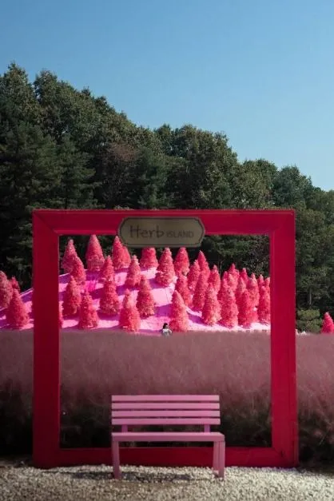
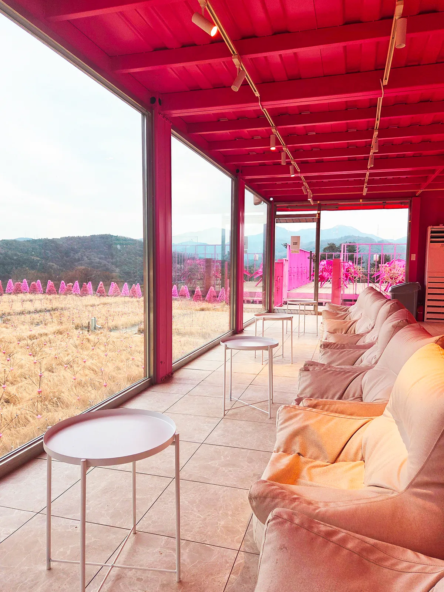
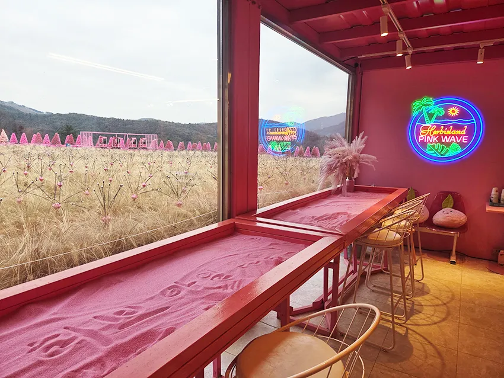
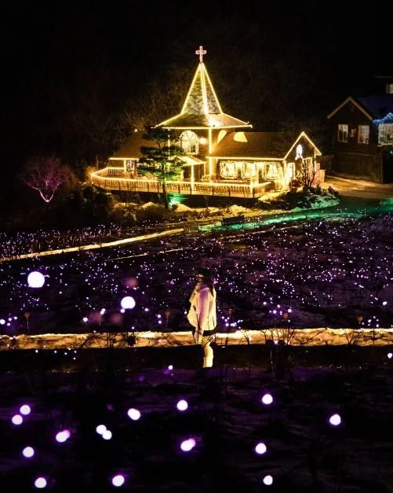
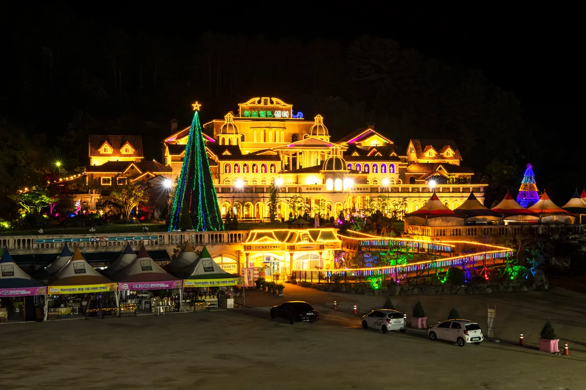
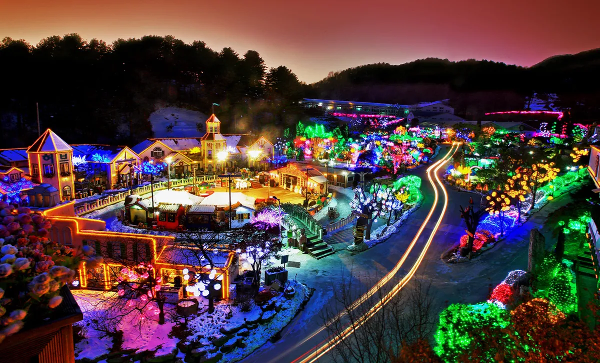

▲ 숲 아래 언덕이 분홍빛 조명으로 물든 허브아일랜드 야간 풍경. 촬영 연도와 시기는 표기되지 않았다 사진=허브아일랜드 공식 홈페이지
핑크뮬리 보러 포천까지 갔다가 해가 지면 그냥 돌아와야 할까? 허브아일랜드는 그럴 필요가 없는 곳이다. 공식 홈페이지가 올린 '2026 핑크뮬리 FESTIVAL' 안내에 따르면 축제는 2026년 9월 19일부터 시작됐고, 같은 날부터 운영시간이 평일·일요일 21시, 토요일·공휴일 22시까지 늘어나는 '시즌 2'에 들어갔다. 낮에는 분홍빛 언덕과 핑크 모래 썰매, 저녁에는 조명으로 바뀌는 풍경이 한 입장권 안에 있다.
다만 이 글은 인터넷에 도는 '핑크뮬리 지금 절정' 류 기사와 선을 긋는다. 허브아일랜드 공식 포스터가 말하는 만개 시기는 '9월 말~10월 중순 예상'이며, 2026년 10월 1일 현재 실제 개화 상태를 확인한 공식·방문자 기록은 찾지 못했다. 요금·운영시간·주소처럼 공식 홈페이지로 확인한 것과, 언론 보도에만 있는 것(주차 무료 등), 확인하지 못한 것을 구분해 정리했다.
1. 허브아일랜드 핑크뮬리 축제, 공식 안내로 보는 기본 정보
허브아일랜드는 공식 소개에서 10만 평 부지에 지중해풍 풍경을 담은 국내 최대 허브 테마파크라고 스스로를 설명한다(약 33만㎡). 340여 종의 허브가 있는 식물박물관을 중심으로, 365일 운영하는 산타마을과 DIY 체험, 족욕 체험이 갖춰져 있다. 공식 행사안내 페이지는 시즌별 축제를 라벤더(5~6월), 향기샤워(7~8월), 핑크뮬리 절정 시기(9~10월), 불빛동화(11~4월)로 나눠 소개한다.
| 항목 | 내용 |
|---|---|
| 시작일 | 2026년 9월 19일(토)~ (공식 포스터) |
| 만개 예상 | 9월 말~10월 중순, 기상 상황에 따라 변동 |
| 대표 체험 | 핑크 모래 썰매, 핑크 트리 배경 포토존, 그네, 뷰 카페, 히비스커스 아이스크림(포스터 소개) |
| 정기 휴장 | 매주 수요일(공휴일·설날·추석·크리스마스 등 휴일·연휴는 정상 운영) |
| 반려동물 | 입장 가능. 10kg 이상 중형견부터는 입마개 필수, 목줄·배변봉투 필수, 식음 매장 등 일부는 출입 제한 가능 |
| 주소 | 경기도 포천시 신북면 청신로947번길 35(공식 내비 주소) |
ℹ️ 주소가 35번인 곳도, 51번인 곳도 있다
공식 홈페이지 '오시는 길'은 내비게이션 주소를 청신로947번길 35로 적는다. 한국관광공사 TourAPI와 일부 여행 매체는 47번길 51로 표기한다. 두 주소 모두 같은 허브아일랜드를 가리키는 것으로 보이나, 출발 전 내비에는 '허브아일랜드' 상호로 검색하는 편이 안전하다(51번과 35번의 관계는 확인 못 함).
최신 공지와 요금은 공식 홈페이지에서 확인할 수 있다. 2026 핑크뮬리 축제 공지 바로가기 운영시간·입장 안내 바로가기

▲ 허브아일랜드 간판이 달린 분홍 액자 프레임 너머 분홍색 나무들이 서 있는 포토존. 한국관광공사 DB 사진으로, 촬영 시기는 표기되지 않았다 사진=한국관광공사
2. 분홍 나무 언덕, 핑크 모래 썰매 — 낮에 즐길 것들
허브아일랜드의 핑크뮬리는 '들판'이기보다 '언덕과 포토존'에 가깝다. 공식 포스터의 사진들을 보면 분홍빛 억새 같은 핑크뮬리 군락 위쪽에 '핑크 트리'라고 소개되는 분홍색 나무들과 분홍 모래 언덕이 있고, 포스터는 "우산 길을 따라 올라가면 정상에서 만나실 수 있다"고 안내한다. 2024년 지역 보도는 핑크뮬리 식재단지를 4년 전부터 1만5000㎡로 확대하고 포토존·탐방로·주차장을 정비했다고 전했다(2024년 9월 보도 기준 수치다).
| 프로그램 | 내용 |
|---|---|
| 핑크 모래 썰매 | 포스터가 '전 세계 단 하나뿐'이라고 소개하는 분홍 모래 언덕 썰매(PINK SAND BOARD) |
| 핑크 트리 포토존 | 분홍 나무('핑크 트리') 배경 사진. 포스터는 '덤'이라고 표현 |
| 핑크 그네 | 핑크뮬리 들판을 배경으로 한 그네(PINK SWING) |
| 뷰 카페(핑크카페) | 스카이팜 위쪽 핑크 카페. 공식 홈페이지는 '핑크카페 옥상 전경'을 소개 |
| 히비스커스 아이스크림 | 포스터가 '명물'로 소개하는 분홍빛 아이스크림(PINK ICE CREAM) |
| 트랙터마차 | 허브 우산길을 따라 스카이팜으로 올라가는 체험(공식 홈페이지). 비탈길 이동에 유용하다 |
ℹ️ '핑크 트리'는 핑크뮬리가 아니다 — 소재는 공식 확인 못 함
포스터는 이 나무들을 '핑크 트리 배경 사진'이라고만 부르고 소재를 밝히지 않는다. 사진으로 보면 핑크뮬리 식물이 아니라 분홍 모래 언덕 위에 일정 간격으로 세운 침엽수 모양이고, 공식 행사안내·FAQ에도 설명이 없다. 2025년 12월 아던트뉴스는 겨울 시즌 '핑크 트리·반딧불이' 조명을 소개했는데, 이 점을 보면 인공 구조물일 가능성이 높아 보이지만 조형물인지 식물인지는 공식 자료로 확인하지 못했다(추정). 핑크뮬리 개화와 무관하게 볼 수 있는 포토존일 수 있으므로 방문 전 문의하자.
▲ 분홍 모래 언덕과 분홍색 나무 너머로 산 능선이 펼쳐지는 전망 지점. 한국관광공사 DB 사진이며 촬영 시기는 표기되지 않았다 사진=한국관광공사
▲ 분홍색 나무들이 늘어선 언덕 탐방로. 한국관광공사 DB 사진이며 촬영 시기는 표기되지 않았다 사진=한국관광공사
✅ 낮 방문 체크포인트
· 공식 안내는 산과 인접해 뱀·말벌·멧돼지 등 야생동물이 나올 수 있고, 자연 지형을 살려 비탈길이 많다고 경고한다 — 굽 높은 신발은 피하자
· 핑크뮬리는 개화 시기를 맞추기 어려운 식물이라 출발 직전 공식 홈페이지·카카오채널 소식을 확인하는 것이 좋다
· 공식 FAQ는 카카오채널을 추가하면 할인쿠폰·축제·이벤트 소식을 받을 수 있다고 안내한다

▲ 핑크 카페 창가에서 내다본 들판 풍경. 마른 풀이 누렇게 보여 개화 절정기와는 다른 시기에 찍힌 사진으로 보인다(촬영 시기 표기 없음) 사진=허브아일랜드 공식 홈페이지

▲ 분홍 모래를 깐 테이블과 PINK WAVE 네온사인이 보이는 핑크 카페 내부(창밖 들판이 마른 풀로 보여 개화기와 다른 시기로 보인다) 사진=허브아일랜드 공식 홈페이지
3. 밤에는? '불빛동화축제'와 핑크 조명의 정확한 관계
여기서 가장 헷갈리기 쉬운 부분이 야간이다. 공식 행사안내가 적은 불빛동화축제 기간은 11월~4월이다. 반면 9월 19일부터 시작되는 시즌 2는 평일 21시·토요일 22시까지 문을 열기 때문에, 핑크뮬리 시즌에도 저녁 관람은 가능하다. 다만 10월 중에 수백만 개 전구의 '불빛동화축제' 전체가 켜지는지는 공식 자료로 확인하지 못했다.
참고할 만한 단서는 있다. 2024년 9월 지역 보도(포천일보)는 핑크뮬리 축제 야간에 산타마을 불빛과 이어 '핑크 반딧불이'를 설치·운영 중이라고 전했고, 2025년 여행 매체들은 낮에는 분홍 꽃밭, 밤에는 조명으로 물드는 풍경을 소개했다. 2025년 10월 보도(여행한조각)는 '밤이 되면 수백만 개의 전구가 켜진다'고 썼지만 공식 불빛동화 기간(11~4월)과 어긋나 2026년 사실로 보지 않았다. 올해(2026년) 같은 구성이 이어지는지는 확인 못 한 만큼, 야간 조명 규모가 중요하다면 방문 전에 문의하는 것이 낫다.

▲ 점 조명이 깔린 언덕 너머로 불 밝힌 건물이 보이는 야간 풍경. 한국관광공사 DB 사진이며 촬영 시기는 표기되지 않았다 사진=한국관광공사

▲ 조명을 두른 건물과 크리스마스트리가 보이는 야경. 공식 홈페이지 사진으로 촬영 시기는 표기되지 않았으며, 크리스마스트리가 보여 11~4월 연말 시즌 사진일 가능성이 크다 사진=허브아일랜드 공식 홈페이지

▲ 눈 덮인 마을과 전구 불빛을 내려다본 야경. 불빛동화축제 시기(공식 11~4월)의 겨울 사진으로 보이며 핑크뮬리 시즌과는 다르다 사진=허브아일랜드 공식 홈페이지
4. 입장료·운영시간 — 공식 표 그대로 정리
요금과 시간은 공식 홈페이지 '운영시간 및 입장 안내사항'(2026년 기준 시즌제)에서 확인했다. 9월 18일까지는 시즌 1(평일·일요일 19시, 토요일 20시 폐장), 9월 19일부터 다음 해 6월 13일까지는 시즌 2로 적혀 있어 핑크뮬리 축제 기간은 시즌 2에 해당한다.
| 구분 | 운영시간 |
|---|---|
| 평일·일요일 | 10:00~21:00 (매장별 마감시간은 다름) |
| 토요일 | 10:00~22:00 |
| 공휴일·연휴 | 10:00~22:00 (연휴 마지막 날은 21:00) |
| 휴장 | 매주 수요일 (공휴일이면 정상 운영) |
| 매표 마감 | 마감 시간 1시간 전 입장 마감 |
| 구분 | 일반(고등학생 이상) | 37개월~중학생 | 장애인(3급 이상)·국가유공자·만 65세 이상·병역명문가·단체(20인 이상) |
|---|---|---|---|
| 평일 | 10,000원 | 8,000원 | 8,000원 |
| 주말·공휴일 | 12,000원 | 10,000원 | 10,000원 |
공식 표에는 신북면민과 영유아(36개월 이하)가 무료 대상으로 적혀 있다. 포천시청 문화관광 사이트의 허브아일랜드 항목('이색명소')도 평일 일반 10,000원·할인 8,000원·단체 8,000원, 주말·공휴일 일반 12,000원·할인 10,000원·단체 10,000원, 신북면민·36개월 이하 무료로 같은 금액을 싣고 있어 금액은 두 곳이 일치한다. 다만 포천시 안내는 '37개월~중학생'과 '만 65세 이상 등'을 따로 나누지 않고 '할인' 한 줄로 묶었으므로 세부 대상은 공식 표를 기준으로 삼되 현장 안내와 한 번 더 대조하길 권한다. 할인 대상은 본인만 가능하며 신분증·장애인증 등을 지참해야 한다. 같은 포천시 페이지에는 문의 전화 031-535-6494와 '토요일·공휴일·연휴 22시' 운영도 적혀 있다(주차·교통 항목은 '정보 미제공').
10월 연휴 일정에 대입해 보면
| 날짜 | 예상 운영 | 일반 입장료(추정) |
|---|---|---|
| 10월 1일(목)·2일(금)·6일(화)·8일(목) | 평일 규정, 21시 폐장 예상(2일은 별도 공휴일 지정 여부를 확인하지 못함) | 10,000원 |
| 10월 3일(토) 개천절 | 정상 운영, 22시 폐장 예상 | 12,000원 |
| 10월 4일(일) | 정상 운영. 일요일 규정(21시)과 연휴 규정(22시)이 겹쳐 폐장은 21시 또는 22시일 수 있어 현장 확인 필요 | 12,000원 |
| 10월 5일(월) 대체공휴일 | 공휴일 규정상 정상 운영, 연휴 마지막 날이라 21시 폐장 예상 | 12,000원 |
| 10월 7일(수) | 정기 휴장(평일 수요일) | - |
| 10월 9일(금) 한글날 | 공휴일이라 정상 운영, 22시 폐장 예상 | 12,000원 |
| 10월 10일(토)·11일(일) | 토요일 22시, 일요일 21시 폐장 예상(한글날 연휴로 볼지는 현장 확인) | 12,000원 |
위 표는 공식 규칙에 날짜를 대입한 추정이다. 대체공휴일·연휴 마지막 날 해석이 현장 공지와 다를 수 있다.
5. 서울에서 자차로 — 길·주차·대중교통
가장 쉬운 길은 구리-포천 고속도로 신북IC다. 공식 '오시는 길'은 신북IC에서 나와 신북면사무소 앞 사거리에서 허브아일랜드·동두천 방면 368번 지방도로 좌회전해 약 14km 가면 우측에 있다고 안내한다. 동두천 방면 3번 국도 경로(의정부-덕정-동두천-초성리 후 368지방도 우회전)와 자유로 경로도 안내돼 있다.
| 방법 | 내용 |
|---|---|
| 자가용(고속도로) | 구리-포천 고속도로 신북IC → 신북면사무소 앞 사거리 좌회전 → 368번 지방도 약 14km |
| 자가용(3번 국도) | 의정부-덕정-동두천-초성리역 → 포천·신북온천 방면 368번 지방도 → 신북온천 지나 약 4km 좌측 |
| 자가용(포천시청 방면 43번 국도) | 의정부 → 43번 국도 → 송우리·대진대학교·포천시청 → 신북면사무소 사거리 → 경복대학교 입구(368번 지방도) 좌회전 → 직진 약 12km → 우측 삼정초등학교로 진입 |
| 서울 출발 소요시간 | 공식 안내에는 없음. 여행 매체는 1.5~2시간으로 보도(교통 상황별로 다름) |
| 주차 | 공식 홈페이지에서 무료 여부 확인 못 함. 2025년 10월 보도(여행한조각)가 '무료, 넓은 주차장'이라 썼고, 2026년 9월 19일 아던트뉴스는 '소형차 약 1000대, 대형차 30대 이상' 수용이라고 보도(모두 공식 수치 아님) |
| 대중교통 | 소요산(동두천)·포천시청에서 57번·57-1번(포천시청발은 87-1번도) 버스. 57번 허브아일랜드 주차장행은 소요산 기준 07:30·10:30·13:30·16:40·19:30 |
버스 시간표 — 공식 '오시는 길' 전재
| 구간·노선 | 시각 |
|---|---|
| 소요산(동두천) → 허브아일랜드 57번(허브아일랜드 주차장) | 07:30 / 10:30 / 13:30 / 16:40 / 19:30 |
| 소요산 → 허브아일랜드 57-1번(삼정초등학교 앞) | 08:00 / 10:00 / 12:00 / 14:00 / 16:00 / 18:00 / 20:00 |
| 허브아일랜드 → 소요산 57번(주차장) | 06:55 / 09:50 / 12:50 / 15:55 / 18:50 |
| 허브아일랜드 → 소요산 57-1번(삼정초 앞) | 06:40 / 08:40 / 10:40 / 12:40 / 14:40 / 16:40 / 18:40 |
| 포천시청 → 허브아일랜드 57번(주차장) | 06:30 / 09:20 / 12:20 / 15:30 / 18:30 |
| 포천시청 → 허브아일랜드 57-1번(삼정초 앞) | 06:10 / 08:10 / 10:10 / 12:10 / 14:10 / 16:10 / 18:10 |
| 포천시청 → 허브아일랜드 87-1번(주차장) | 06:30 / 08:00 / 09:20 / 11:40 / 14:30 / 17:00 / 20:00 |
| 허브아일랜드 → 포천시청 57번(주차장) | 08:00 / 11:00 / 14:00 / 17:10 / 20:00 |
| 허브아일랜드 → 포천시청 57-1번(삼정초 앞) | 08:20 / 10:20 / 12:20 / 14:20 / 16:20 / 18:20 / 20:20 |
| 허브아일랜드 → 포천시청 87-1번(주차장) | 07:20 / 08:45 / 10:10 / 12:35 / 15:30 / 18:10 / 20:40 |
이 시간표로 계산하면 야간까지 즐기면 버스로는 돌아올 수 없다. 허브아일랜드발 막차는 소요산행 57번 18:50, 포천시청행 87-1번 20:40인데 폐장은 평일·일요일 21시, 토요일·공휴일 22시다. 저녁 조명까지 보려면 자가용이나 택시가 사실상 전제라는 점이 자동차 독자에게 중요한 대목이다(2026년 시간표 개편 여부는 확인하지 못했다).
야간 방문 시간 설계표
| 폐장 시각 | 적용 요일 | 매표 마감(계산) | 실질 관람 팁 |
|---|---|---|---|
| 21:00 | 평일(수요일 휴장)·일요일 | 20:00 | 해가 지는 18시 안팎(10월 초, 추정)에 입장하면 조명 시간대가 2시간 남짓 |
| 22:00 | 토요일·공휴일·연휴 | 21:00 | 폐장 직전 퇴장 차량이 한꺼번에 몰릴 수 있어 30분 일찍 나서는 편이 낫다(추정) |
✅ 운전자 체크포인트
· 마지막 구간은 지방도·산자락 도로다. 연휴·주말 낮에는 진입로가 막힐 수 있다는 점을 감안하자(구체 정체 정보는 확인 못 함)
· 버스는 하루 5~7회라 막차 시간을 먼저 확인해야 한다. 예) 허브아일랜드발 소요산행 57번 마지막 18:50, 포천시청행 87-1번 마지막 20:40
· 공식 안내는 포천시청 쪽에서 오는 43번 국도 경로(신북면사무소 사거리에서 368번 지방도 좌회전 후 약 12km, 삼정초등학교 쪽)도 적고 있다
· 야간까지 보려면 돌아오는 산길을 어두운 상태로 운전하게 된다. 야생동물 출몰 가능성도 공식 안내에 있다
6. 같이 묶을 만한 포천 코스와 비슷한 기사
허브아일랜드는 포천 시내·한탄강 권역과는 방향이 다르다. 같은 날 다른 곳까지 욕심내기보다 허브아일랜드 하나에 낮~저녁을 쓰는 코스가 현실적이다. 포천의 다른 가을 코스는 이미 정리한 기사가 있다.
| 연계지 | 허브아일랜드에서 | 운전 포인트 |
|---|---|---|
| 신북IC(귀가 진입) | 공식 안내 기준 368번 지방도 약 14km | 돌아올 때도 신북면사무소 사거리 기점 — 연휴 저녁 정체 여부는 확인 못 함 |
| 산정호수·명성산 | 자차 약 40~50분 안팎으로 추정 | 억새 절정은 10월 중순~11월 초라 핑크뮬리 시기와는 일부만 겹친다. 신북IC~산정호수 국도 43호선은 상습 정체 구간으로 알려져 오전 일찍 이동하는 편이 낫다 |
| 한탄강 권역(테라판타지아 등) | 방향이 달라 하루 코스로 붙이기 어렵다 | 야간 미디어아트는 별도 기사 참고 |
ℹ️ 포천시 관광 안내와 대조한 결과
포천시청 문화관광 사이트('이색명소')의 허브아일랜드 항목은 주소·운영시간·휴무·이용요금이 공식 홈페이지와 일치했다. 반면 주차·교통 항목은 '정보 미제공'이라, 주차 요금이나 대중교통은 시청 안내로 확인할 수 없다. 시청이 제공하는 별도의 개화 현황 정보도 찾지 못했다.
- 포천 한탄강 가든페스타·테라판타지아 한글날 연휴 코스 — 낮 꽃밭과 밤 미디어아트(허브아일랜드와는 다른 장소)
- 포천 명성산 억새 2026 — 억새 산행 코스
- 핑크뮬리 명소 주차 가이드 2026 — 다른 핑크뮬리 명소와 주차 비교
- 반려동물 동반 가을 드라이브 코스 — 허브아일랜드 반려동물 동반 사례 포함
- 부산 삼락생태공원 핑크뮬리·코스모스 — 남쪽 대안
ℹ️ '언제 가야 하나'에 대한 현실적 답
공식 포스터는 만개를 9월 말~10월 중순으로 예상했고, 2025년 여행 매체는 '9월 말~10월 초 절정'이라고 썼다. 2026년 실제 개화 상태는 이 글을 쓴 10월 1일 시점에 확인하지 못했다. 공식 홈페이지 사진 공모전(1주 전 게시) 등 방문자 사진이 올라오는지 확인하고 출발하면 실패 확률을 줄일 수 있다. 9월 19일자 매체 보도(아던트뉴스)도 '만개 시기는 9월 말~10월 중순 사이로 예상'이라는 포스터 문구를 되풀이했을 뿐, 실제 개화 정도를 보도한 것은 아니었다. 개화·운영 여부는 공식 문의 전화(031-535-6494)로 확인하는 것이 가장 확실하다.
7. 방문 전 자주 묻는 질문
Q. 지금(10월 초) 가면 핑크뮬리가 만개했나요?
확인하지 못했다. 공식 포스터의 만개 예상은 9월 말~10월 중순이고, 2026년 9월 매체 보도도 이 문구를 되풀이한 수준이었다. 실제 개화는 기상에 따라 달라질 수 있으니 출발 전 문의 전화(031-535-6494)로 확인하는 것이 안전하다.
Q. 주차비가 있나요?
공식 홈페이지와 포천시 관광 안내에는 요금 정보가 없어 확정하지 못했다. 2025년 10월 보도는 '무료'로 썼고 2026년 9월 보도는 수용 규모(소형 약 1,000대)만 언급했다. 현장 안내를 따르자.
Q. 저녁 조명까지 보고 버스로 돌아올 수 있나요?
공식 시간표상 허브아일랜드발 막차는 소요산행 18:50, 포천시청행 87-1번 20:40이다. 21~22시 폐장까지 머문다면 버스로는 귀가가 어렵다.
Q. 핑크 모래 썰매는 입장료에 포함인가요?
포스터는 '허브아일랜드에서만 즐길 수 있는 특별한 체험'이라고만 소개할 뿐 별도 요금 여부를 적지 않았다. 확인하지 못했다.
Q. 수요일에도 갈 수 있나요?
매주 수요일은 휴장이다. 다만 공휴일·연휴이면 정상 운영하므로 2026년 10월에는 7일(수)이 평일이라 쉰다.
8. 요약
포천 허브아일랜드 핑크뮬리 축제는 공식 포스터 기준 2026년 9월 19일부터 시작됐고, 만개는 9월 말~10월 중순 예상(기상에 따라 변동)이다. 입장료는 평일 일반 10,000원, 주말·공휴일 12,000원, 매주 수요일 휴장이며, 9월 19일부터 평일·일요일 21시, 토요일·공휴일 22시까지 문을 연다. 낮에는 핑크 모래 썰매·핑크 트리 포토존·그네·뷰 카페, 저녁에는 조명 풍경을 이어서 볼 수 있다.
다만 공식 불빛동화축제 기간은 11~4월이라 10월 야간 조명 규모는 확인하지 못했고, 주차 무료 여부도 공식 홈페이지·포천시 안내에서는 확인하지 못했다(언론은 2025년 무료, 2026년 소형 약 1,000대 수용으로 보도). 야간 관람 뒤에는 버스 막차(소요산행 18:50, 포천시청행 20:40)가 폐장보다 빨라 자가용이 사실상 필수다. 자차는 구리-포천 고속도로 신북IC에서 368번 지방도로 약 14km, 서울 출발 소요시간은 공식 안내가 없고 매체 보도로 1.5~2시간이다. 현재 개화 상태는 출발 전 공식 홈페이지·카카오채널로 확인하자.